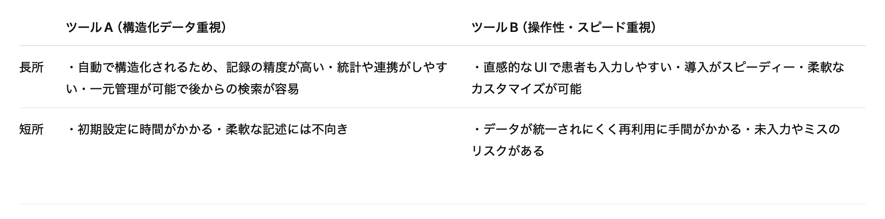
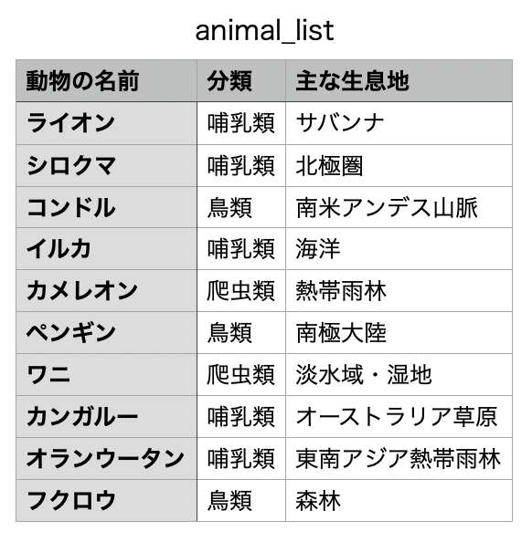

ChatGPTは主にテキストを生成するAIですが、プロンプトの工夫によって、テキスト以外の多様な形式でも出力が可能です。ここでは、代表的な出力形式の例をご紹介します。
出力形式を明確に指示することで、目的に合ったわかりやすい結果が得られやすくなります。
プレーンテキスト形式（plain text format）とは、書式設定や特別な構造を持たない、純粋な文字情報のみで構成されたテキストです。ChatGPTでは、この形式が標準的な出力方法となっています。
つまり、太字や斜体、画像、表といった装飾要素を含まず、単純な文字だけで情報を表現します。
プレーンテキストファイルは、たとえばメモ帳やVimなどのテキストエディタで開くことができ、プログラミングやウェブ制作、設定ファイルの作成など多岐にわたる用途で利用されています。
| プロンプト | ＃目的: 初めて問診票のデジタル化を検討している医療スタッフが、2つの異なるツールを比較したいと考えています。 ＃選択肢: ツールA（構造化データ管理が得意）と ツールB（操作性・スピードに優れる） ＃情報リクエスト: - ツールAの長所：このツールを選ぶメリットは？ - ツールAの短所：導入や運用で気をつける点は？ - ツールBの長所：このツールを選ぶメリットは？ - ツールBの短所：導入や運用で気をつける点は？ ＃目的の詳細：患者の情報をスムーズに収集しつつ、記録の正確性や活用性も重視したい。 ＃出力形式：プレーンテキスト形式でお願いします。 |
| ChatGPTの出力例 | ＃ツールAの長所: 1.回答データが自動で構造化され、電子カルテやレセプト作成に活用しやすい。 2.定型化された質問設計により、記載漏れや不明瞭な回答を防ぎやすい。 3.患者ごとの記録が一元化され、後からの検索や統計分析がスムーズ。 4.データ連携や二次利用を前提とした設計のため、業務効率の向上が期待できる。 ＃ツールAの短所: 1.導入初期に質問内容や形式の設定が必要で、準備に手間がかかる。 2.フリーテキストに弱く、柔軟な記載には対応しづらい場合がある。 ＃ツールBの長所: 1.タブレットなどの端末で直感的に操作でき、患者も入力しやすい。 2.デザイン性や自由記述欄のカスタマイズが柔軟で、現場に合わせやすい。 3.導入までの時間が短く、現場にすぐなじむケースが多い。 ＃ツールBの短所: 1.データ形式がばらばらになりやすく、集計や再利用には追加の手間が発生する。 2.入力ミスや未入力が起こりやすく、後処理に時間がかかることがある。 |
項目ごとに比較したい場合は、表形式が便利です。たとえば、以下のようなプロンプトを使えば、長所・短所を言語別に見比べられる表が生成されます。
▼プロンプト例
▼ChatGPTの出力例（表形式）
ChatGPTの有料プランを利用することで、CSV形式での出力にも対応できます。CSV（Comma-Separated Values）形式は、ほとんどの表計算ソフトやデータベースで読み込める一般的なファイル形式です。
ChatGPTでCSV出力を指定すれば、例えば動物の分類リストなども簡単にCSVファイル化できます。これにより、生成したデータをそのまま業務システムに取り込むことが可能になります。
以下が実際に出力されたCSVファイルです。
ChatGPTの有料版では、画像の生成も可能です。これにより、視覚的な補足やチーム間での共通認識形成などがスムーズになります。
従来、画像制作には一定のデザイン知識が求められましたが、ChatGPTを活用すれば誰でもイメージを具体化できるようになります。
たとえば、Web広告用バナーの草案作成や、資料に挿入するイラストの作成などが可能です。
例：安心感と清潔感を感じさせる、近代的かつ芸術的な健診センターの外観を魅力的に表現した画像を作ってください。